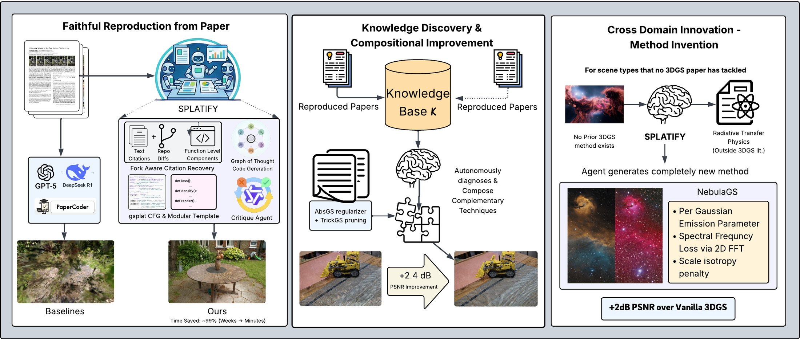
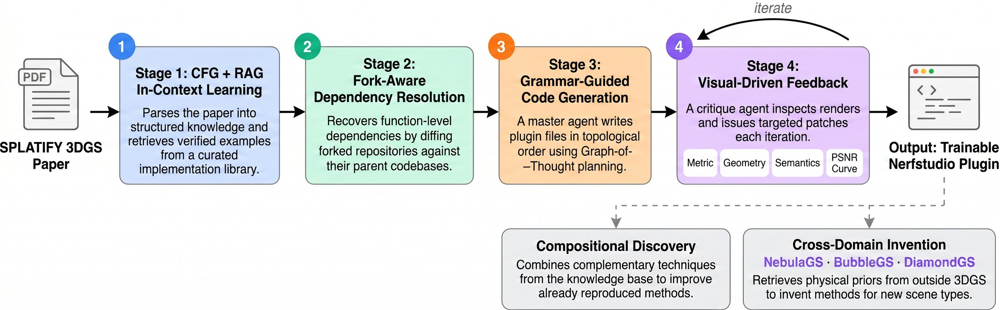
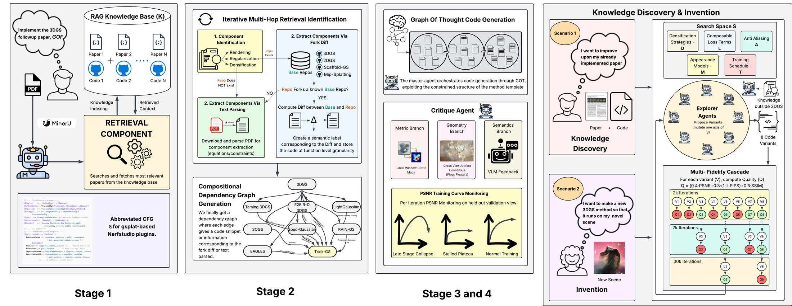
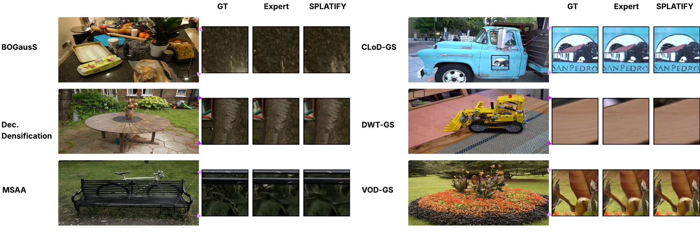
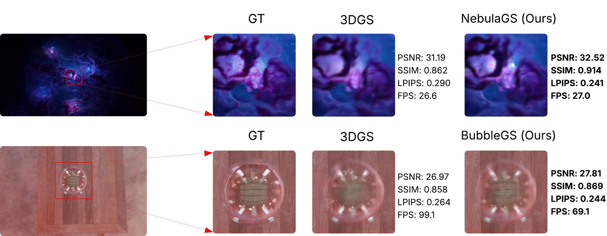

A multi-agent framework that turns 3D Gaussian Splatting papers into trainable gsplat plugins in minutes, then improves on them and invents new methods.

3D Gaussian Splatting research is growing fast, with over 1,500 follow-up papers in under three years, and researchers spend significant effort reimplementing papers before they can build on them. We introduce SPLATIFY, a multi-agent framework that converts 3DGS papers into trainable gsplat-based implementations, a setting where generic paper-to-code methods and frontier models fail.
SPLATIFY rests on five ideas. It constrains synthesis with a context-free grammar for gsplat plugins, adds architectural elements for faithful reproduction, improves methods by composing knowledge across papers, discovers methods across disciplines, and is evaluated on SPLATIFY-Bench, a 30-paper benchmark. On papers without public code, it matches expert implementations while cutting development time from weeks to minutes, and compositional discovery further improves PSNR by up to 2.4 dB. We also show new methods for volumetric nebula rendering and other scientific domains, synthesized entirely by SPLATIFY.
Watch SPLATIFY run end to end: it reads the original 3DGS paper, writes and refines the gs_template implementation, then runs the knowledge-discovery arena that converges on NebulaGS.
The interactive demo replays the same session in two acts. In Act 1, an agent reads the original 3DGS paper, recovers its citations, plans the architecture, writes the gs_template implementation and fixes artifacts from visual feedback. In Act 2, eight island agents compete across generations with knowledge transfer and converge on NebulaGS.
Watch the agents go from a PDF to a trainable gsplat plugin, then to a new physics-informed method that beats the baseline on nebula scenes.
A modular method template with nine extension points (losses, densification, rendering, optimization, …) covering the full 3DGS modification space. Generated code satisfies gsplat's architectural invariants by construction.
Fork-aware citation recovery at function-level granularity, Graph-of-Thought synthesis in topological order, RAG-selected in-context examples from 20+ verified implementations, and visual feedback combining PSNR-guided regeneration, Gaussian-level structural checks and VLM-driven patching.
Agents diagnose weaknesses in reproduced methods on their own and compose complementary regularizers, losses and densification strategies from the knowledge base. This gives up to +2.4 dB PSNR with no human guidance.
Agents retrieve physical priors from outside the 3DGS literature, such as radiative transfer and thin-film optics, and turn them into new methods for scene types no prior paper has addressed.
A 30-paper benchmark stratified by code availability and technical complexity. It includes 10 never-implemented papers with commissioned expert reference implementations, for evaluation free of pretraining contamination.

A parsing agent turns the paper into a CFG-grounded knowledge base. Fork-aware dependency resolution recovers missing components from citation graphs and repository diffs. GoT synthesis then writes the plugin, which is smoke-tested and refined with PSNR curves and a VLM critic.
The knowledge base of reproduced methods becomes a search space. Explorer agents find a method's weaknesses, retrieve complementary techniques and validate compositions. They beat random sampling, which used 8× the tokens to reach a quarter of the gain.
Given a scene type with no prior 3DGS method, agents bring in the relevant physics and compose it with rendering knowledge. The result is a working gsplat method, verified by humans at the code level.

We compare against Paper2Code, AutoP2C, frontier LLMs (GPT-5.2, Gemini 3.1 Pro, DeepSeek 3.2), NERFIFY, and expert implementations that took 1–2 weeks per paper. All methods train for 30k iterations on Mip-NeRF 360 or Tanks & Temples on identical data and views.
| Metric | Paper2Code | AutoP2C | GPT-5.2 | Gemini 3.1 Pro | DeepSeek 3.2 | NERFIFY | SPLATIFY |
|---|---|---|---|---|---|---|---|
| Imports resolve | ✓ | ✗ | ✓ | ✓ | ✓ | ✓ | ✓ |
| Compiles / trainable | ✗ | ✗ | ~ | ~ | ✗ | ✓ | ✓ |
| Training stability | ✗ | ✗ | ✗ | ✗ | ✗ | ✗ | ✓ |
| Gaussian invariants | ✗ | ✗ | ✗ | ✗ | ✗ | ✗ | ✓ |
| Converges to paper results | ✗ | ✗ | ✗ | ✗ | ✗ | ~ | ✓ |
~ denotes occasional success that never reaches training stability or paper-level results.
These papers have no public code, so no LLM can have seen an implementation during pretraining. SPLATIFY lands within ±0.5 dB PSNR and ±0.02 SSIM of expert implementations on average. Every other baseline failed to produce trainable code for any of these papers.
| Paper | Scene | Reported | Expert Impl. | SPLATIFY | ||||||
|---|---|---|---|---|---|---|---|---|---|---|
| PSNR↑ | SSIM↑ | LPIPS↓ | PSNR↑ | SSIM↑ | LPIPS↓ | PSNR↑ | SSIM↑ | LPIPS↓ | ||
| DWTGS | Mip-NeRF 360 | 19.75 | 0.590 | 0.343 | 17.92 | 0.508 | 0.471 | 18.68 | 0.510 | 0.374 |
| Decomposing Densification | Mip-NeRF 360 | 27.79 | 0.826 | 0.214 | 26.85 | 0.792 | 0.286 | 27.17 | 0.820 | 0.261 |
| BOGausS | Mip-NeRF 360 | 27.54 | 0.804 | 0.251 | 27.25 | 0.801 | 0.276 | 27.34 | 0.809 | 0.263 |
| Opti3DGS | Mip-NeRF 360 | 27.09 | 0.809 | 0.237 | 27.51 | 0.816 | 0.221 | 27.71 | 0.841 | 0.209 |
| CLoD-GS | Truck | 25.29 | 0.880 | 0.148 | 24.83 | 0.854 | 0.227 | 25.48 | 0.873 | 0.128 |

Against the original author repositories under identical training conditions, SPLATIFY deviates by less than 0.3 dB PSNR on average. It also turns each method into a standard gsplat plugin, which makes cross-method comparison fair.
| Paper | Scene | Original Repository | SPLATIFY | ||||
|---|---|---|---|---|---|---|---|
| PSNR↑ | SSIM↑ | LPIPS↓ | PSNR↑ | SSIM↑ | LPIPS↓ | ||
| 3DGS | Bicycle | 25.25 | 0.771 | 0.205 | 26.16 | 0.765 | 0.359 |
| LP-3DGS | Bicycle | 24.91 | 0.737 | 0.264 | 24.64 | 0.740 | 0.189 |
| GNS | Truck | 26.52 | 0.899 | 0.119 | 25.97 | 0.891 | 0.095 |
| Micro-Splatting | Kitchen | 34.10 | 0.960 | 0.011 | 33.15 | 0.935 | 0.099 |
| CompGS | Counter | 28.47 | 0.895 | 0.222 | 28.28 | 0.894 | 0.153 |
Code that trains but silently drops a novel loss term has still failed. We score how much of each paper's contribution is implemented, using a weighted semantic score from 0 to 1. The scores come from an LLM judge and agree with blind scoring by human experts at Spearman ρ = 0.92. SPLATIFY scores above 0.94 on every paper.
| Paper | Paper2Code | Gemini 3.1 Pro | DeepSeek 3.2 | GPT-5.2 Thinking | SPLATIFY |
|---|---|---|---|---|---|
| Trick-GS | 0.41 | 0.51 | 0.64 | 0.62 | 0.94 |
| 2DGS | 0.55 | 0.40 | 0.58 | 0.61 | 0.95 |
| Scaffold-GS | 0.34 | 0.44 | 0.42 | 0.59 | 1.00 |
| GaussianShader | 0.40 | 0.50 | 0.58 | 0.73 | 1.00 |
| Pixel-GS | 0.40 | 0.46 | 0.67 | 0.72 | 1.00 |
Weighted semantic score (higher is better). The full C / I / M / W breakdown is in the paper.
After reproducing a paper, agents query the knowledge base for techniques that fix the weaknesses they diagnosed, then validate that the composition helps. They get no hints about which techniques to try. Gains reach +2.4 dB PSNR over the reproduction-only baseline.
| Paper | Before | After | Techniques composed by the agents | ||||
|---|---|---|---|---|---|---|---|
| PSNR↑ | SSIM↑ | LPIPS↓ | PSNR↑ | SSIM↑ | LPIPS↓ | ||
| DWTGS | 18.68 | 0.510 | 0.374 | 21.09 +2.41 | 0.725 | 0.281 | Patch structure loss + opacity / normal / depth regularization |
| MSAA-3DGS | 25.35 | 0.758 | 0.369 | 26.19 +0.84 | 0.791 | 0.293 | Bilateral grid + losses |
| Opti3DGS | 27.71 | 0.841 | 0.209 | 28.05 +0.34 | 0.853 | 0.125 | Adaptive densification threshold + opacity entropy regularization |
| CompGS | 28.28 | 0.894 | 0.153 | 28.50 +0.22 | 0.899 | 0.146 | EMA centroid updates + gradient-based codebook refinement |
| GNS | 25.97 | 0.891 | 0.095 | 26.15 +0.18 | 0.902 | 0.097 | AA rasterization + denser init + post-densification losses |
Standard 3DGS fails on scenes whose physics differs from opaque surfaces. Given only the scene type, SPLATIFY retrieves physical priors from outside the 3DGS literature and composes them into a working gsplat method. Both methods were verified by humans at the code level.

Nebulae are optically thin emitters, which conflicts with alpha compositing and pushes opacities into opaque shells. The agents pulled in radiative transfer and Kolmogorov turbulence theory and added six training-time changes: an opacity ceiling, a per-Gaussian emission parameter, a 2D-FFT spectral loss, a scale-isotropy penalty, multi-scale L1, and SH degree 0. No rasterizer changes were needed. Result: 32.52 dB vs. 31.19 dB.
Soap-bubble colour comes from thin-film interference, which SH cannot represent. The agents evaluated the Airy reflectance at R/G/B wavelengths and added six gated components: per-Gaussian film thickness, a physics chrominance loss, an opacity ceiling at α = 0.45, a shell-flatness loss, TV on thickness, and L1 sparsity. Result: 27.81 dB vs. 26.97 dB.
Ablations are averaged over 10 SPLATIFY-Bench papers. CFG constraints matter most for trainability, because without them agents misplace densification logic or wire optimizers incorrectly. Without fork-aware recovery, 30% of novelties go unimplemented. One-shot generation without Graph-of-Thought collapses to a score of 0.49.
| Configuration | Score | Trainable (%) | C |
|---|---|---|---|
| SPLATIFY (full) | 0.97 | 100 | 1.00 |
| w/o CFG constraints | 0.91 | 70 | 0.85 |
| w/o in-context examples | 0.73 | 100 | 1.00 |
| w/o fork-aware recovery | 0.64 | 100 | 0.70 |
| w/ simple citation recovery | 0.79 | 100 | 0.90 |
| w/o ICE + recovery | 0.52 | 70 | 0.65 |
| w/o smoke tests | 0.68 | 50 | 1.00 |
| w/o Gaussian structural checks | 0.89 | 80 | 0.95 |
| w/o VLM feedback | 0.94 | 100 | 1.00 |
| w/o PSNR curve monitor | 0.94 | 100 | 0.95 |
| One-shot, w/o GoT | 0.49 | 60 | 0.95 |
The release has the multi-agent pipeline (paper → code, the /invent tournament and /discover evolution, plus a web UI) and the gs_template Nerfstudio plugin with 33 trainable methods, including NebulaGS, BubbleGS and DiamondGS.